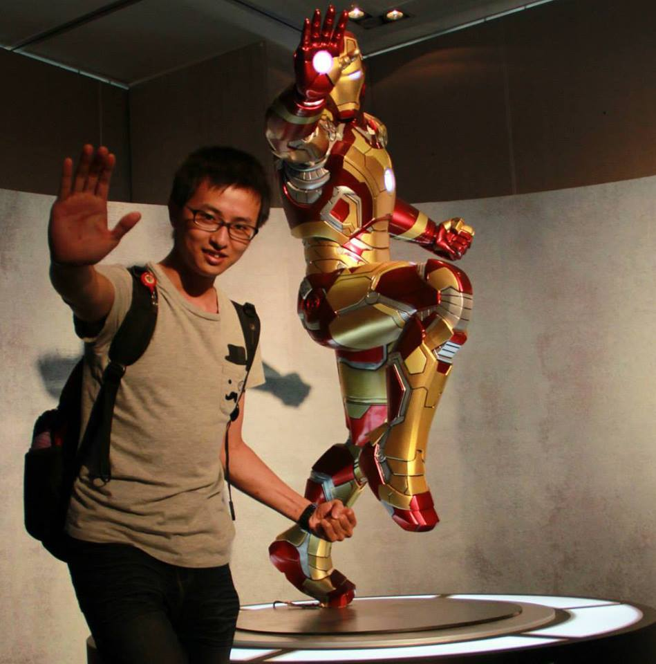

Hackthon
行銷公關暨新聞稿架構
Megan
2015/01/18
Who am I ?
Megan

Facebook:
http://fb.fmtpeter
Who am I ?
Megan
98/09~99/09 台科大 精誠學系學會 資訊長
98/09~99/09 台科大 電腦研習社 教學長
103/02~迄今 電影公司 行銷公關、企劃編輯
行銷公關
定義
整合本身所擁有的資源，
透過企劃和創意的方式，
對活動、事件進行傳播，
使之宣傳至一般大眾，
成為大眾關心的話題、議題，
從而吸引媒體的報導與民眾的參與。
行銷公關
傳統行銷與公關行銷的差異
傳統行銷
自賣自誇的方式推廣
無法預測媒體與民眾的反應
公關行銷
將行銷活動規劃為大眾生活的一部份
成為媒體與民眾感興趣的話題
行銷公關
要件
本身具有新聞性
符合社會脈動
找到可借用的話題
掌握可製造話題的契機
掌握民眾的心理製造風向
行銷公關
操作技巧
規畫設計吸引人注目的話題
避開爭議事件
了解媒體特性及需求
觀察閱聽眾的興趣
找出事件或活動的賣點
創意包裝及快速應變能力
行銷案例分享
聖鬥士首部 3D 電影，粉絲首映會大獻寶
行銷案例分享
哆啦A夢行銷術特映會先亮「道具」換票
東森新聞 哆啦A夢行銷術 特映會先亮「道具」換票
活動募款與贊助
募款與贊助的差異
募款
在不特定的時間及地點，尋找所需要的資源(不限於金錢)，以達到組織的使命
贊助
提供資金、實物、技術或勞務等交換予冠名、廣告、促銷等，大多為等價交換實現雙贏的策略
活動贊助
為何要爭取贊助？
贊助商
企業行銷戰略的重要部份，藉由贊助活動獲得曝光、推廣的效果
活動方
獲得資金、物品的支援
提昇活動規模及品質
活動贊助
如何爭取贊助支持？
媒體資源交換
活動冠名
場刊曝光
新聞宣傳
等價交換
商品交換
廣告交換
活動贊助
爭取贊助流程
準備提案企劃書
列出欲提案單位，逐一連絡及拜訪
確實宣傳、和贊助單位保持聯繫
活動結束後的感謝狀
影片: 給賭神的影帶
活動贊助
提案企劃書實作
形象圖示
活動介紹及內容
活動流程
贊助及回饋方式
宣傳方式
聯絡方式
新聞稿撰寫教學
新聞稿架構
標題宣傳
撰文簡述
照片選定
撰寫討論與實作
新聞稿架構
標題
定標時間
撰文前、中、後
標題選用
新聞稿架構
撰文
簡述本次活動內容
人、事、時、地、物
撰寫原則
起、承、轉、合
文字精煉
活動照片
撰寫討論與實作
範例一：
聖鬥士星矢
範例二：
哆啦A夢
新聞稿撰寫實作
Thanks for listening!
本投影片採用
創用 CC「姓名標示—相同方式分享 3.0 台灣」授權條款